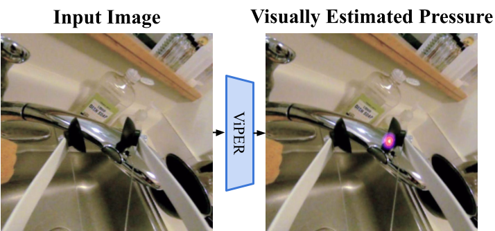
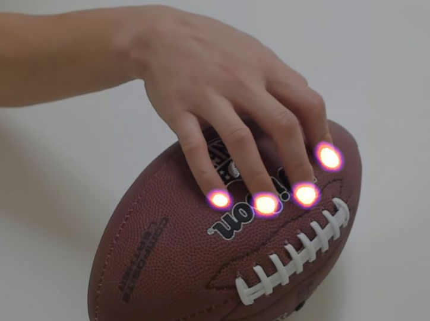
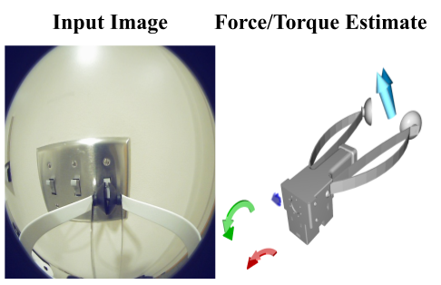
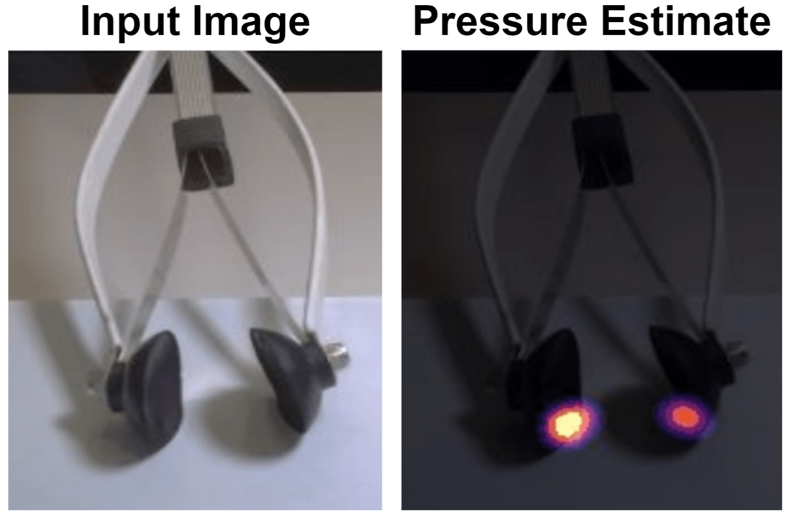
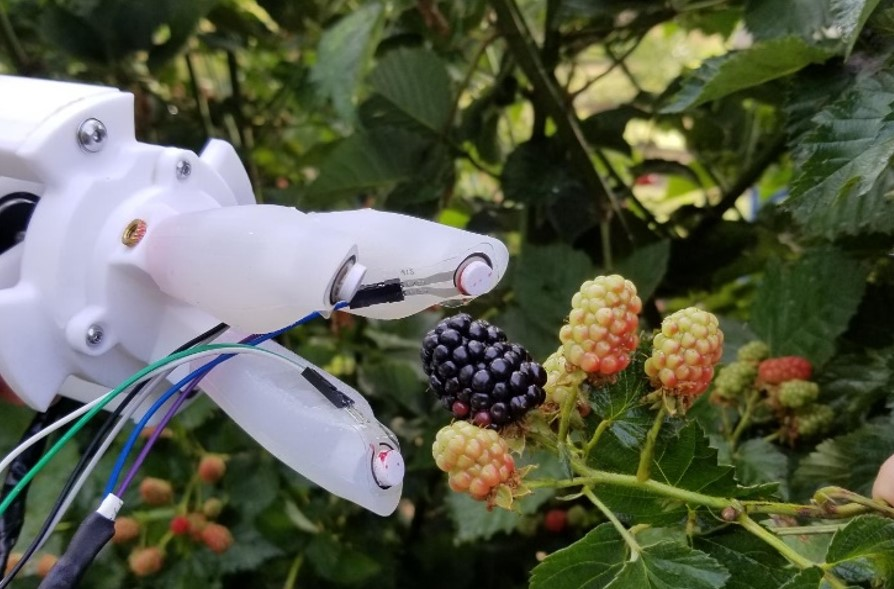

I am a second-year MS Robotics student at Georgia Tech advised by Prof. Charlie Kemp. I obtained my B.S. from the University of Arkansas working with Prof. Yue Chen. My research interests lie at the intersection of computer vision and robotics. I am particularly interested in self-supervised learning, video understanding, visuomotor control, and solving the scaling problem for robotics.
Publications
|
 |
Visual Contact Pressure Estimation for Grippers in the Wild
Jeremy A Collins, Cody Houff, Patrick Grady, Charles C Kemp.
|
|
 |
Visual Estimation of Fingertip Pressure on Diverse Surfaces using Easily Captured Data
Patrick Grady,
Jeremy A Collins,
Chengcheng Tang, Christopher D Twigg, James Hays, Charles C Kemp.
In submission
|
|
 |
Force/Torque Sensing for Soft Grippers using an External Camera
Jeremy A Collins,
Patrick Grady, Charles C Kemp.
|
|
 |
Visual Pressure Estimation and Control for Soft Robotic Grippers
Patrick Grady,
Jeremy A Collins,
Samarth Brahmbhatt, Christopher D Twigg, Chengcheng Tang, James
Hays, Charles C Kemp.
|
|
 |
Tendon-Driven Soft Robotic Gripper for Blackberry Harvesting
Anthony L Gunderman,
Jeremy A Collins,
Andrea L Myers, Renee T Threlfall, Yue Chen.
RA-L 2022
|

{kind=link}
{kind=link}
{kind=link}
{kind=link}
Education
Georgia Institute of Technology
Aug. 2021 - PresentM.S. in Robotics
University of Arkansas
Aug. 2017 - May 2021B.S. in Mechanical Engineering (Summa Cum Laude)
Experience
Engineering Intern Jul. 2021 - May 2022
Mechanical Engineering Intern May 2019 - Aug. 2019
Application Development Intern May 2018 - Aug. 2018
Quality Control and Logistics May 2015 - Aug. 2017